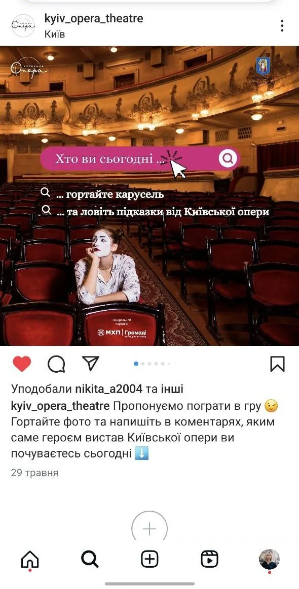
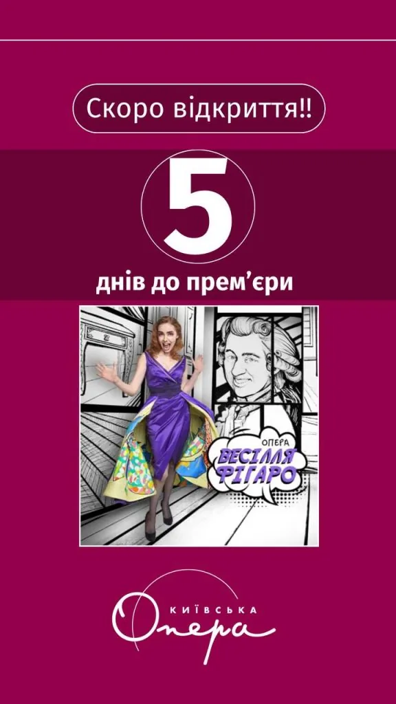
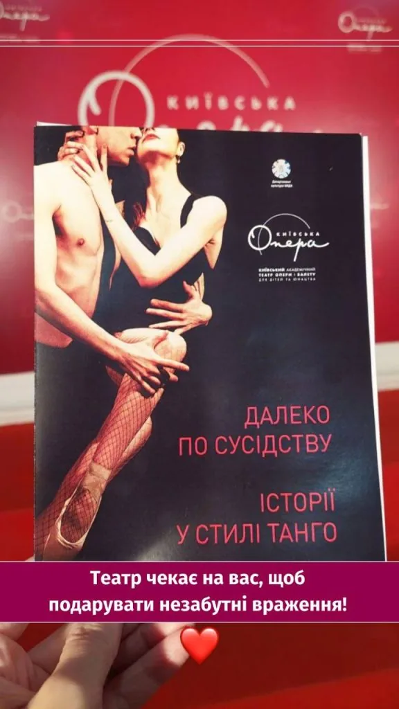

Європейська оперна класика в перекладі на українську мову.
Опери, балети, мюзикли, концерти.
Співпраця тривала: березень 2023 — вересень 2024.
/Проблеми клієнта:
- Київську оперу сприймали як дитячий театр
- Слабке розуміння унікального репертуару
- Стереотип, що опера — “не для мене”
- Люди не знали, як обрати виставу
- Страх, що потрібно якесь “особливе вбрання”
- Відчуття, що опера — “щось із минулого”
/Цілі:
- Збільшити підписників та конверсії на сайт
- Підвищити взаємодію
- Сформувати імідж сучасного театру — і для молоді, і для дорослих
- Популяризувати українські твори
- Збільшити продажі квитків через соцмережі

/Що зробили:
- Проаналізували конкурентів — регулярність, контент, залученість
- Сегментували аудиторію, дослідили бар’єри
- Розробили контент-стратегію:
- Образ театру як культурного бренду
- Вихід на новий рівень digital-комунікації
- Формування системної присутності в Instagram і Facebook
- Співпраця з локальною інфлюенсеркою, яка асоціюється з мистецтвом і культурою.
/Контентні рішення:
- Фокус на закулісся: репетиції, інтерв’ю, підготовка
- Уніфікований стиль комунікації
- Інтерактиви: вікторини, опитування, Q&A, ігри
- Додаткова реклама на гастролі та вистави
- Візуальний контент зі сценою, завісою, фірмовими елементами


/результати:
Через 1,5 роки:
- Facebook:
Збільшення охоплення — +398%
Збільшення взаємодії — +294%
- Instagram:
Приріст охоплення — +71%
Збільшилась взаємодія:
- з дописами +202%
- з Reels +9244%
- із Stories +273%
/Висновки:
Завдяки глибокому аналізу аудиторії, чіткій контент-стратегії та залученню емоційного контенту Київська опера стала не лише театром для дітей, а сучасним культурним брендом, який активно розвивається в соцмережах.